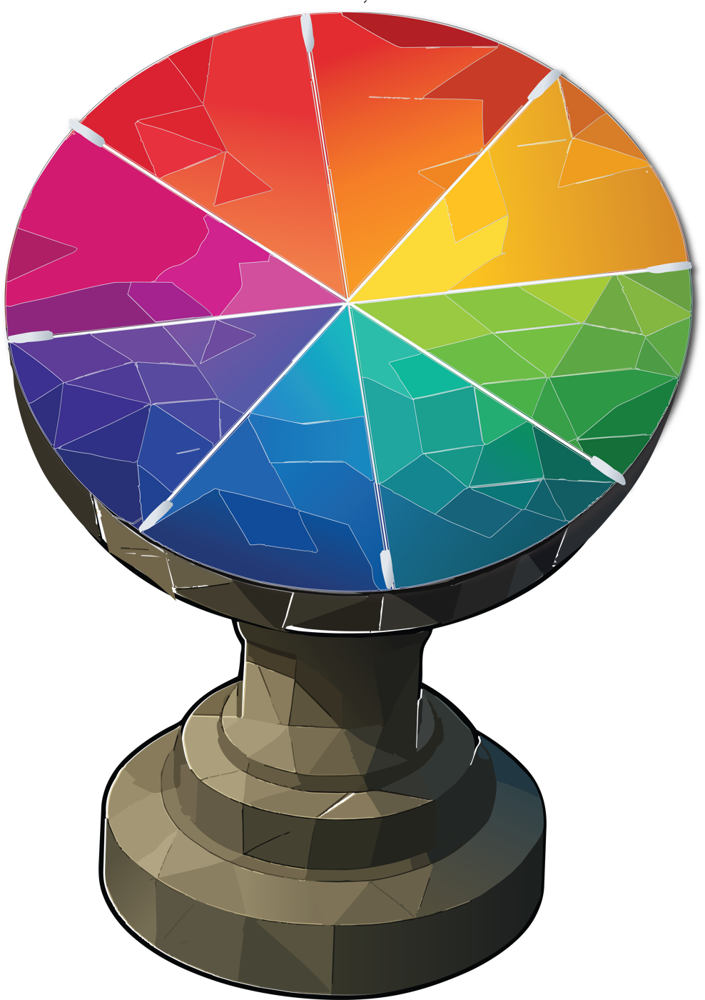

As attention moves like the sun, its shadow falls across the day's weather.
Tap the dial to read where you are today — and remember, weather passes.

tap to read your weather
✓ Resolved — Seeking & Care are climate, not weather. They carry a steady glow
(Seeking warm = the sun/source, Care cool = a warm front) and the readout says so. The dial
now teaches the spine itself: 6 segments are weather that passes, 2 are climate you tend.
⚠ Still NEEDS LISA — confirm the 8 line-up. Proposed clockwise from the top:
anger · seeking · joy · disgust · care · sadness · fear · surprise
(italics = climate), sampled from your disc colours. Confirm or swap any — it's one editable
block at the top of the script (SEGMENTS).